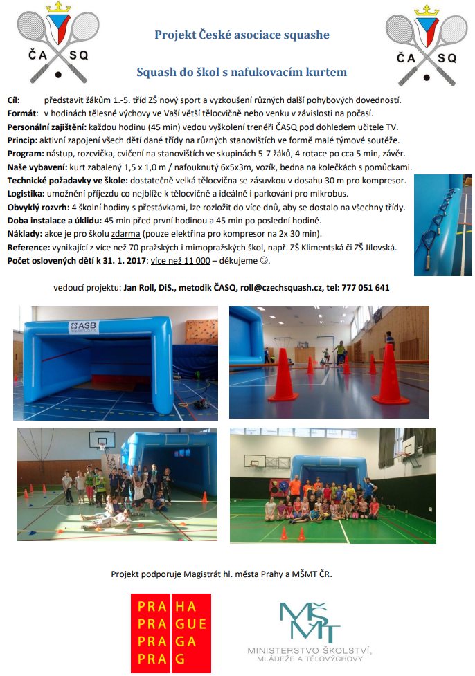

Nábor na squash
31.08.2022
Náborová aktivita je nezbytným předpokladem pro navýšení členské základny. Zaměření na děti prvního stupně základních škol je logickým opatřením. Zejména děti prvních a druhých tříd ZŠ si vybírají sportovní kroužky a je nutné jít jim tak říkajíc "naproti".
Pro tyto účely poskytujeme našim klubům zdarma zapůjčení 2 nafukovacích kurtů, sportovních pomůcek a asociačních mikrobusů. Případní zájemci se mohou hlásit na Sekretariátu ČASQ - pište na fertekova@czechsquash.cz.
V letech 2016-17 jsme realizovali projekt Squash do škol. Navštívili jsme stovky základních škol po celé ČR, a prezentovali tak squash více cca 15 000 dětí ve věku 5-13 let. V rámci hodin tělesné výuky 1.-5. tříd jsme prezentovali squash a další tělesně-výchovné aktivity, které jsou pro squash důležité.
Děti utvořily skupinky, které spolu soutěžily na čtyřech stanovištích. Jednotlivá stanoviště rozvíjely pohybové schopnosti (rychlost a obratnost) a učily novým dovednostem potřebným pro squash. Hodiny byly vedeny 4 zástupci ČASQ (2 vyškolení pracovníci a 2 asistenti z nejbližšího squashového klubu) a probíhaly pod dozorem učitelů a učitelek tělesné výchovy.
Dbali jsme na bezpečnost a zapojení všech dětí bez výjimek (squash si např. vyzkoušely i děti s poruchami autistického spektra). Desítky dětí se následně staly členy squashových klubů a navštěvují pravidelné squashové tréninky pod vedením kvalifikovaných trenérů. Řada takto získaných dětí se také účastní amatérských či mistrovských soutěží České asociace squashe. Tyto aktivity vyžadovaly stále více pracovníků pro nábory i pravidelné tréninky. Pomohli jsme tak vytvořit pracovní příležitosti pro jednotky asistentů trenérů. De facto jsme také napomohli k větší návštěvnosti squashových center. Celkově tedy k došlo k naplnění všech stanovených cílů projektu.
Informační projektový leták pro školy z roku 2016:
V současné době připravujeme rozšíření původního projektu.

Videa projektu: první video, druhé video.